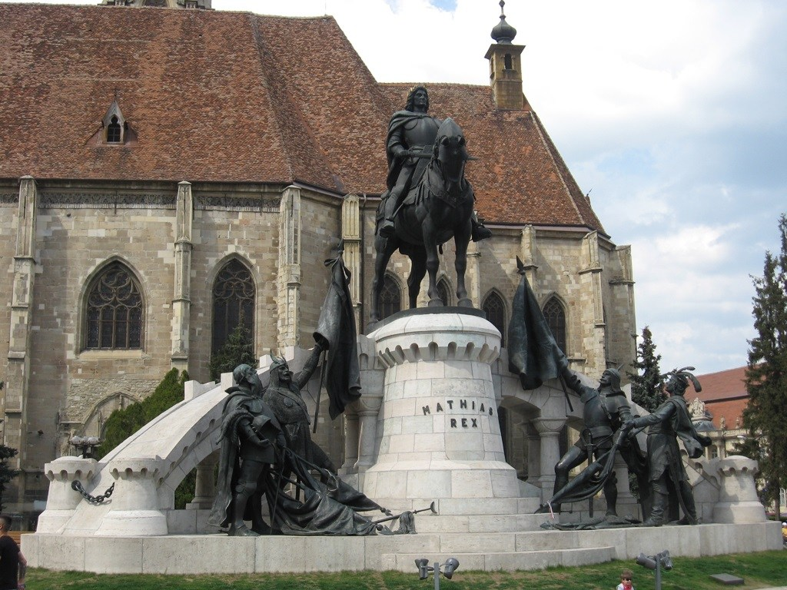

- Statuia lui Matei Corvin
Autoritatile ungare au decis in 1894 sa ii ridice o statuie in bronz lui Matei Corvin, la 450 de ani de la nasterea sa si 400 de ani de la trecerea in nefiinta, intr-o perioada de declin a Imperiului Austro-Ungar.Nascut la Cluj-Napoca, Matei Corvin a fost cel de-al doilea fiu al lui Iancu de Hunedoara si al Elisabetei Szilagy. Matei a fost rege al Ungariei din 1458, cand a fost inscaunat la varsta de 15 ani, pana in 1490. Incoronarea sa a avut loc insa mai tarziu, in 1464. Armatele sale au ajuns in 1485 pana in Viena, unde si-a stabilit capitala regatului. Matei Corvin a contribuit intr-o mare masura la prosperitatea orasului sau natal, ajutand la construirea si intretinerea unor biserici (chiar a Catedralei “Sf. Mihail”) si acordand clujenilor numeroase privilegii economice

Statuia se afla in piata centrala (Piata Unirii) si este opera lui Fadrusz Janos, care a castigat marele premiu la Expozitia Mondiala de la Paris. Dezvelita in 1902, sub numele de “Matias, rege al Ungariei”, numele i-a fost schimbat dupa al doilea razboi mondial in “Regele Matei Corvin”, ca sa fie redenumita mai apoi, de catre istoricul Daicoviciu, cu latinescul “Mathias Rex”.
- Cetatuia
Cetățuia este o fortificație habsburgică construită între anii 1715 – 1735, după planurile arhitectului militar Giovanni M. Visconti. Cu ziduri sub formă de stea, vechea fortificație cuprindea o redută și un turn, fiind înconjurată de bastioane, iar în exterior era împrejmuită de un val de pământ.
Ridicată cu scopul de a asigura un post de apărare, precum și un punct de control al trupelor austriace asupra orașului, Cetatea Norilor, cum a mai fost numită, a fost de multe ori folosită și ca închisoare, mai ales în perioada Revoluției de la 1848. Aici, în anul 1849, unul dintre eroii Revoluției, pastorul sas Stephan Ludwig Roth, a fost întemnițat și executat.
Un alt trecut, unul interbelic, și-a lăsat și el amprenta asupra Cetățuii. Pe panta dealului, se găseau cele mai sărace zone ale orașului. Cocioabe mizere, bordeluri, o adevărată ,,mahala” – aceasta era Cetățuia în prima parte a secolului al XX-lea. Comunismul a adus cu sine amenajările care au făcut din Dealul Cetățuii unul dintre cele mai îndrăgite și mai cunoscute spații de recreere din Cluj.
- Gradina Botanica
Gradina Botanica din Cluj este o institutie stiintifica, didactica si educativa, subordonata Universitatii Babes-Bolyai. Bazele acestei prestigioase institutii au fost puse de catre profesorul Alexandru Borza in 1920 . Pe o suprafata de 14 ha, pe un teren cu configuratie variata, potrivit pentru cresterea si dezvoltarea plantelor de pe diferite continente, sunt cultivate circa 10.000 de categorii specifice.
.jpg)
- Biserica Sf. Mihail
Biserica Sfântul Mihail din Cluj este un impresionant monument istoric și religios, unul dintre cele mai reprezentative edificii gotice din România. Construită între secolele XIV – XV, biserica se află în actuala Piața Unirii din Cluj, devenind unul dintre monumentele emblematice ale orașului.Edificiul religios are 70 de metri lungime și o înălțime maximă de 80 de metri. Începând cu anul 2010, este înscris pe lista monumentelor istorice din județul Cluj, elaborată de Ministerul Culturii si Patrimoniului Național.
Noile libertăți și privilegii oferite Clujului în 19 august 1326 de către Carol Robert de Anjou includeau și dreptul orașului de a-și alege preotul și parohul. Acest privilegiu urma să se materializeze prin ridicarea unei biserici parohiale. Terenul ales servise înainte ca cimitir, existând aici și o capelă dedicată Sf. Iacob. În anul 1349, conform unui document eliberat de curtea papală de la Avignon, celor care au ajutat financiar la construcția bisericii li se iertau păcatele
Se mai știe despre construcția propriu-zisă a lăcașului faptul că au existat două faze: între anii 1316 – 1390 (în 1390 era finalizat și altarul) și între anii 1410 – 1487.
Biserica Sfântul Mihail din Cluj este o biserică gotică de tip sală, având un cor boltit în cruce pe ogive, flancat de altare laterale. Sculpturile, vitraliile și bolta impresionează prin măreția specifică catedralelor gotice, biserica fiind adesea considerată și confundată, la o primă vedere, cu o posibilă catedrală.
La intrare, deasupra porții, regăsim un blazon cu Sfântul Mihail, iar sub el putem observa stema Sfântului Imperiu Roman, cea a Regatului Ungar și a Regatului Boemiei. Ineditul acestei alăturări de steme se explică prin faptul că împăratul Sigismund de Luxemburg, sub domnia căruia s-a finalizat edificiul, era atât împărat roman, cât și rege al Ungariei și al Boemie
Biserica a fost martorul unor momente importante în istoria orașului. Aici a fost botezat Matia Corvin, iar regina Izabella le preda aici trimișilor împăratului Ferdinand I însemnele regale. Tot aici au fost investiți renumiți principi ai Transilvaniei: Gabriel Bethlen, Sigismund Rákoczi, Sigismund Báthory și Gabriel Báthory.

- Teatrul National
Primul teatru orășenesc (de limbă maghiară) din Cluj datează din 1821, fiind așezat pe locul actualei clădiri denumite „Casa Universitarilor” (str. M. Kogălniceanu). La începutul secolului al XX-lea s-a proiectat ridicarea unei noi clădiri care să adăpostească această instituție, vechea clădire fiind necorespunzătoare. În 1904 a început construcția noii clădiri în actuala Piața Ștefan cel Mare, pe locul fostei piețe de lemne a orașului. Lucrările, finalizate în 1906, au fost executate de celebra firmă constructoare de teatre Helmer și Fellner.[1] Clădirea fost inaugurată în ziua de 8 septembrie 1906 cu o reprezentație a Teatrului Maghiar, al cărui director era Jenő Janovics. Construit în stil baroc-rococo, edificiul are o capacitate de 1000 de locuri și trei rânduri de logie.
La îndemnul lui Tiberiu Brediceanu, clădirea a trecut în patrimoniul Consiliului Dirigent Român la data de 14 mai 1919, când a fost preluată de Onisifor Ghibu. La acea vreme Onisifor Ghibu ocupa funcția de secretar general pentru resortul Instrucțiunii și Artelor din cadrul Consiliului Dirigent Român. În același timp, Teatrul Maghiar a fost mutat în clădirea de pe strada Emil Isac, aproape de Parcul Central și râul Someș, în care funcționează și în prezent.
Prima reprezentație în limba română în clădirea Teatrului Național din Cluj a avut loc la 14 mai 1919,[2] iar primul spectacol al companiei de limba română din Cluj a avut loc 1 decembrie 1919, marcând un an de la Marea Unire.Clădirea adăpostește atât compania Teatrului Național, cât și Opera Română. În 1990, în nișele de pe fațada clădirii au fost amplasate statuile „Thalia” și „Eutherpe”, opere ale sculptorului Vasile Rus-Batin